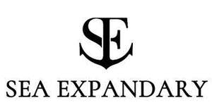

Trade Mark Journal No.2026/012 20 March 2026
UK00004349840 5 March 2026 (12,35,37,39)

- Class 12
- Vehicles for locomotion by land, air, water or rail; cars; bicycles; pumps for bicycle tyres; electric vehicles; trolleys; sleighs [vehicles]; tyres for vehicle wheels; repair outfits for inner tubes; civilian drones; yachts; sailboats; boats; rudders; davits for boats; oars; water scooters [personal watercraft]; water vehicles; spars for ships; diving bells; life-saving rafts; vehicle bumpers; windscreens; upholstery for vehicles; upholstery for yachts and boats.
- Class 35
- Advertising; presentation of goods on communication media, for retail purposes; providing business information; arranging and conducting of commercial events; sales promotion for others; provision of an online marketplace for buyers and sellers of goods and services; procurement services for others [purchasing goods and services for other businesses]; import-export agency services; personnel management consultancy; updating and maintenance of data in computer databases; drawing up of statements of accounts; rental of vending machines; sponsorship search; rental of sales stands; rental of cash registers; retail services in relation to pharmaceutical, veterinary and sanitary preparations and medical supplies; retail services in relation to yachts, sailboats, power boats, motor launches, motor boats, ships.
- Class 37
- Providing information relating to repairs; underwater repair; quarrying services; upholstering; heating equipment installation and repair; machinery installation, maintenance and repair; interference suppression in electrical apparatus; installation and maintenance of medical apparatus and instruments; motor vehicle maintenance and repair; airplane maintenance and repair; shipbuilding; building of cruise ships (vessels); maintenance and repair of ships, boats and yachts; repair or maintenance of vessels; repair, servicing and maintenance of vehicles and apparatus for locomotion by water including boats, yachts and ships; cleaning of ships, boats and yachts; washing of ships, boats and yachts; custom installation of exterior, interior and mechanical parts of vehicles for locomotion by water, including boats and yachts [tuning]; electric vehicle battery swapping services for vehicles and apparatus for locomotion by water including yachts; electric vehicle battery swapping services for vehicles and apparatus for locomotion by water including boats; vehicle washing; vehicle maintenance; vehicle breakdown repair services; custom installation of exterior, interior and mechanical parts of vehicles [tuning]; electric vehicle battery swapping services; photographic apparatus repair; clock and watch repair; safe maintenance and repair; rustproofing; retreading of tyres; furniture maintenance; dry cleaning; disinfecting; passenger lift installation and repair; fire alarm installation and repair; shoe maintenance and repair; telephone installation and repair; knife sharpening; pump repair; umbrella repair; restoration of works of art; restoration of musical instruments; swimming-pool maintenance; rental of drainage pumps; repair of power lines; rental of dishwashing machines; mobile telephone battery charging services; repair of tools; jewellery repair; repair of personal ornaments; installation and maintenance of sports and fitness equipment; installation and maintenance of amusement machines and apparatus; spectacle repair and maintenance; rental of fuel dispensing machines.
- Class 39
- Transport; transport services for sightseeing tours; packaging of goods; GPS navigation services; rental of yachts; yacht and boat charter services; pleasure boat transport; rental of sailboats; provision of information relating to the transportation of passengers; providing information relating to marine transport services; boat rental; boat transport; salvaging; car transport; air transport; garage rental; carting; storage of goods; rental of atmospheric diving suits; distribution of energy; delivery of goods; arranging and operating cruises; rental of wheelchairs; rental of delivery robots.
Sea Expandray Limited
Representative: Reddie & Grose LLP